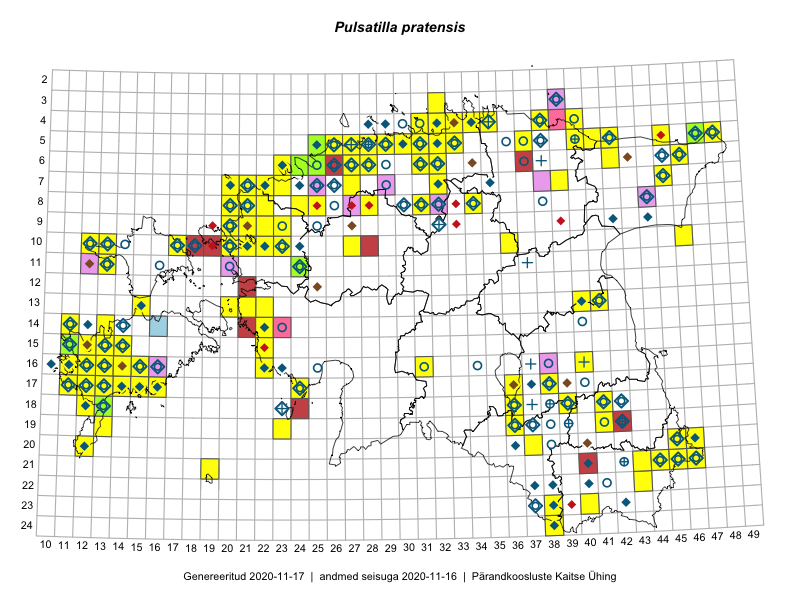

Pulsatilla pratensis
Uuendatud: 2016-12-01
Kaardile koondatud taksonid: Pulsatilla pratensis (L.) Mill.

Kaart põhineb 321 kirjel, neist vaatlusi 320 ja eksemplare 1.
Kuvatud viited 20 esimesele andmebaasikirjele, ülejäänud PlutoFis
- Malle Leht: 2015-05-22: : ala
- Malle Leht: 2015-05-22: : GPS punkt
- Malle Leht: 2015-05-22: 18-41: GPS punkt
- Toomas Kukk: 2015-08-05: 15-12: GPS punkt
- Toomas Kukk, Peedu Saar, Kersti Tambets, Sten Mander, Janika Sammasto: 2015-08-06: 18-13: GPS punkt
- Peedu Saar, Toomas Kukk: 2015-05-26: 10-17: ala
- Rein Kalamees, Kersti Püssa: 2015-08-09: 05-31: ala
- Tiit Hallikma, Toomas Kukk: 2015-07-21: 05-45: ala
- Rein Kalamees: 2015-09-03: 05-32: ala
- Tiit Hallikma, Toomas Kukk: 2015-07-21: 05-45: GPS punkt
- Tiit Hallikma, Toomas Kukk: 2015-07-21: 05-45: GPS punkt
- Peedu Saar, Elle Roosaluste: 2015-07-12: 13-20: ala
- Rein Kalamees, Kersti Püssa: 2015-06-30: 04-31: GPS punkt
- Toomas Kukk, Peedu Saar: 2015-05-26: 10-17: GPS punkt
- Peedu Saar: 2015-08-11: 13-41: GPS punkt
- Peedu Saar: 2015-08-11: 13-41: ala
- Rein Kalamees, Kersti Püssa: 2015-05-29: 04-38: ala
- Rein Kalamees, Kersti Püssa: 2015-05-29: 04-38: GPS punkt
- Rein Kalamees, Kersti Püssa: 2015-05-29: 04-38: GPS punkt
- Toomas Kukk, Mari Reitalu: 2014-06-20: 16-12: ala